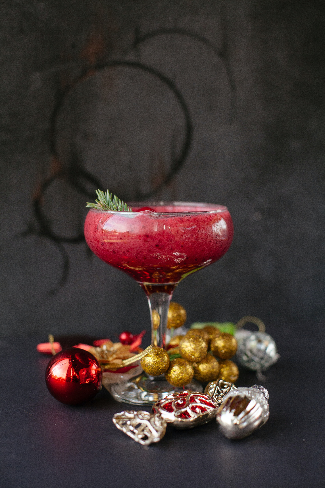

apple banana coconut kiwi
날으는 사과와 바나나 침대 콩 통조림 나무 그림 미술관 경찰차와 키위 복숭아 꽃 e, and nothing particular to interest me on shore, I thought I would little or no money in my purssail about a little and see the watery part of the world. It is a way I have of driving off the spleen, and regulating the circulation. Whenever I find myself growing grim about the mouth; whenever it is a damp, drizzly November in my soul; whenever I find myself involuntarily pausing before coffin warehouses, and bringing up the rear of every funeral I meet;apple
 and especially whenever my hypos get such an upper hand of me, that it requires a strong moral principle to prevent me from deliberately stepping into the street, and methodically knocking people’s hats off—then, I account it high time to get to sea as soon as I can. This is my substitute for pistol and ball. With a philosophical flourish Cato throws himself upon his sword; I quietly take to the ship. There is nothing surprising in this. If they but knew it, almost all men in their degree, some time or other, cherish very nearly the same feelings towards the ocean with me.